실습 원자료: WS1 「막대자석 착자」(ANSYS Release 15.0 교육 자료, 9쪽). 원본 쪽을 그대로 싣고, 따라하기 번호는 이 PC의 ANSYS Electronics Desktop 2020 R2(EM 모드)에서 실제로 한 순서로 다시 적었습니다. 원본과 다른 곳은 「현재 버전」 상자로 고쳐 적었습니다.
각 쪽 마지막 번호 아래 ▶ 영상으로 따라하기를 누르면 그 쪽의 실제 조작 영상이 펼쳐집니다. 자막 번호(①②…)는 그 쪽의 따라하기 번호와 같고, 값을 넣는 창은 확대해 보여 줍니다. 해석을 기다리는 시간은 「⏩ 생략」 표시와 함께 잘라 냈습니다. 노란 원은 마우스 위치, 빨간 원은 클릭입니다.
앞에는 착자 공정 개요와 학습 질문, 원리 1~5(착자 원리·착자 요크와 착자기·착자 방향·감자·착자 검증 및 측정)를, 뒤에는 결과 분석, 추가 실습(착자 방향 반전), 학습 질문 정리, 교재 8.1절의 전동기 자석 설정, 원점 중심 배치 모델, 외전형 전동기용 아크 자석의 평행·방사 착자 비교를 실었습니다.
도입
도입. 착자 공정 개요와 학습 질문
전동기와 발전기는 전기 에너지와 기계 에너지를 서로 변환하는 기기이며, 영구자석은 그 핵심 부품입니다. 이 교재는 영구자석을 만드는 공정인 착자부터 다룹니다. 아래 영상은 착자기의 방전 과정을 재현한 것입니다.
착자 방전 재현 영상 (8초, 소리 포함)
질문 착자 순간 착자기는 커패시터에 저장한 에너지를 요크 코일로 방전합니다. 이때 코일에 흐르는 전류의 크기는 어느 정도입니까? ① 약 75 A ② 약 750 A ③ 약 7,500 A — 답은 원리 2의 실측 전류에서 확인합니다.
착자 요크 적용 사례
착자 장비 제조사의 요크 목록에는 자동차·가전 부품용 요크가 다수 포함되어 있습니다. 이들 부품의 영구자석은 아래와 같은 전용 요크로 착자됩니다(사진 이름은 제조사 제품명 그대로).
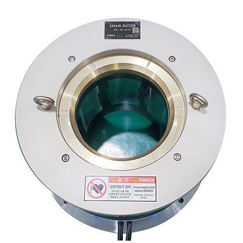
트랙션모터 요크
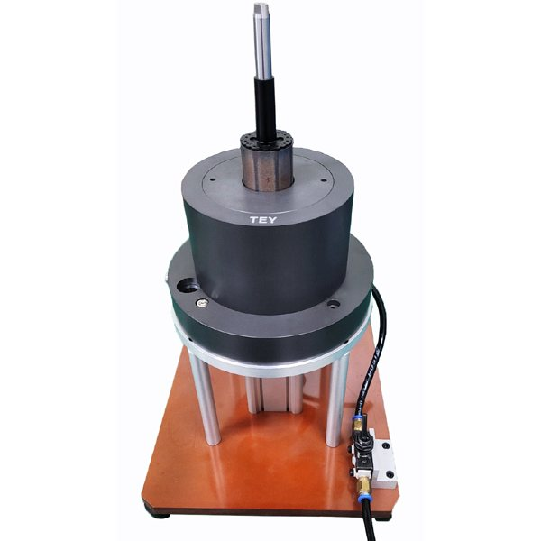
EPS-TESLA-8극
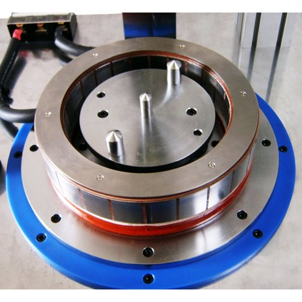
세탁기Motor, IN24, OUT24
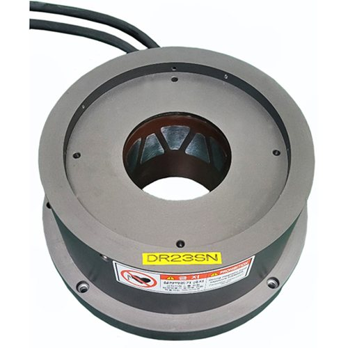
알터네이터 12극
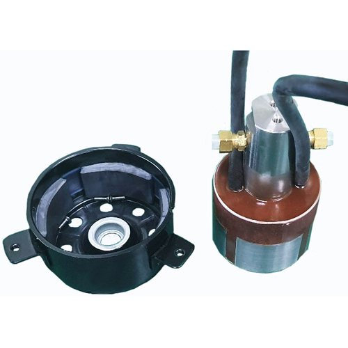
쿨링팬 4극
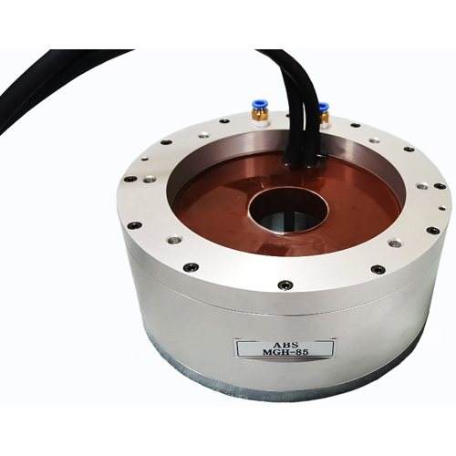
ABS 4극
착자 장비 구성
착자 설비는 전류를 공급하는 착자기 본체와, 자석을 장착해 자계를 인가하는 착자 요크로 구성됩니다. 국제마그네트는 「전류공급 장치인 Control부와 자계를 유도하는 Yoke부로 구성된 착자기」로 작업한다고 설명합니다.
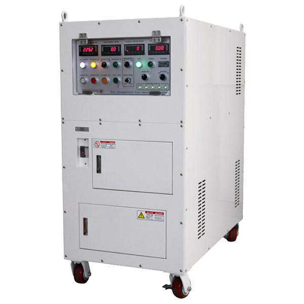
착자기 본체 (엠엠에스테크)
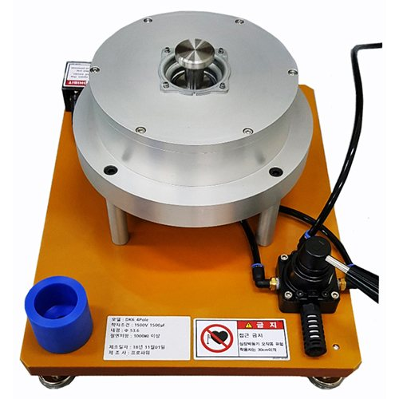
BLDC 4극 착자 요크 (엠엠에스테크)
착자 시점
착자는 자석 성형을 마친 뒤, 경우에 따라서는 전동기 조립을 마친 뒤에 실시합니다.
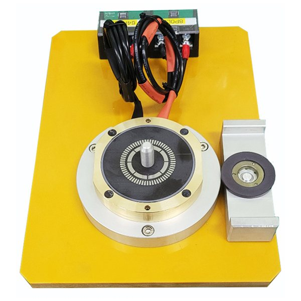
착자 요크와 고리 모양 시편 (엠엠에스테크)
착자기 회로 구성
착자기는 변압기·정류 회로, 커패시터 뱅크, 스위치(SCR), 요크 코일로 구성된 펄스 전원 회로입니다.
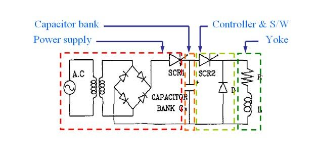
착자 시스템 등가회로 (이창진 2013, Fig. 2.6) — 교류 → 변압기 → 다이오드 브리지 → SCR → 커패시터 뱅크 → SCR → 요크
착자 품질과 코깅 토크
자극 간 착자 세기의 차이가 4 % 수준이어도, 하드디스크 전동기에서는 설계상 나타나지 않아야 할 코깅 토크 성분이 커집니다.
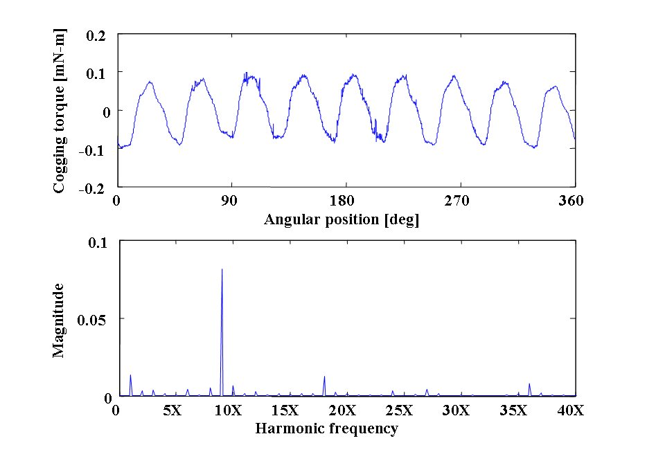
하드디스크 모터의 코깅 토크와 주파수 분석 (이창진 2013, Fig. 1.1, 논문 참고문헌 [15]의 측정) — 원래 크면 안 되는 9X 성분이 큼
가변자속 전동기의 착자·감자
예측 에어컨 압축기용으로 개발된 가변자속 전동기는 운전 중에 자석을 착자·감자합니다. 자석을 감자하면 같은 속도에서 상역기전력은 어떻게 변합니까? ① 변화 없음 ② 약 1/2 ③ 약 2배
측정값은 17.3 V → 9.55 V(1000 rpm, 20 ℃, 실측)였습니다. 9.55 ÷ 17.3 ≈ 0.55로 약 1/2입니다(②).
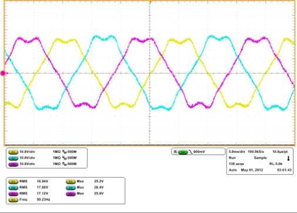
가변자속 전동기 상역기전력 측정 화면 — 착자 상태 (에어컨용 가변자속 전동기 발표, 2012)
비의도적 감자 사례
반대로 의도하지 않은 감자도 발생합니다. 허용보다 센 MRI(3 T)에 노출된 귀 속 이식기(인공와우) 자석이 자력을 잃어 다시 이식한 사례가 보고되어 있습니다(「The implant magnet had been demagnetized.」).
영구자석 소재의 발전
1916년 KS강 개발 이후 영구자석의 성능은 꾸준히 향상되었습니다. 기고문은 「NdFeB 영구자석은 최대자기에너지적[(BH)max] 이 KS-steel의 60배에 달하는 높은 특성」이라고 적고 있습니다.
자석이 될 재료 안에는 작은 자석처럼 한 방향으로 자화된 영역(자구)이 많습니다. 바깥에서 자계를 걸지 않으면 자구의 방향이 제각각이라 전체로는 자석이 아닙니다. 센 자계를 걸면 자구가 바깥 자계 방향으로 줄을 서고, 모든 자구가 한 방향이 되면 더 센 자계를 걸어도 자화가 더 늘지 않습니다(포화).
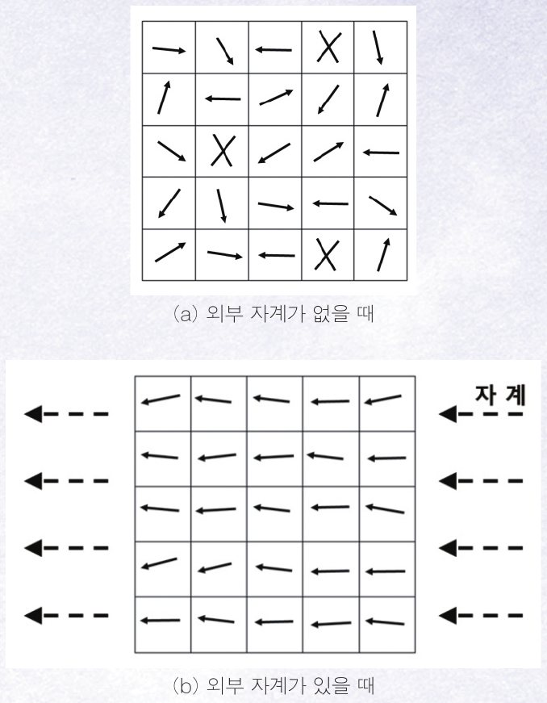
그림 1-1. 자구의 배열 — (a) 바깥 자계가 없을 때, (b) 바깥 자계를 걸었을 때 (기고문 그림 2)
이 자계를 다시 0으로 줄여도 자화가 처음처럼 0으로 돌아가지 않고 남습니다. 이렇게 남는 자속밀도를 잔류 자속밀도 Br, 남은 자속밀도를 0으로 만들려고 거꾸로 걸어야 하는 자계의 세기를 보자력 Hc라 합니다. 교재는 이 모습을 히스테리시스 곡선으로 설명합니다: 코일 전류가 0이 되어도 c점에서 철심이 자화되어 있습니다.
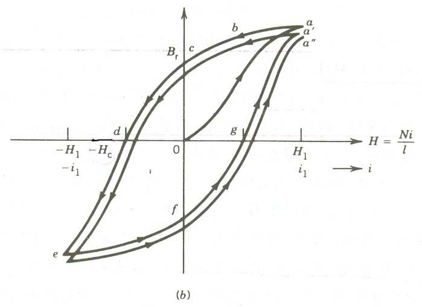
그림 1-2. 히스테리시스 루프 (교재 그림 1.14(b)) — 0 → a(포화) → 전류 0인 c점에 자화가 남음
그래서 착자(자석으로 만들기)는 재료에 큰 기자력을 걸었다가 없애는 일입니다. 교재 1.5.1절은 「그림 1.21(a)의 회로에서 자기 재료는 처음은 자화되지 않았다고 가정하고 큰 기자력을 공급한 후 제거하면 … 잔류 자속밀도로 유지」된다고 설명합니다. 아래 두 그림은 같은 원리를 그린 도식입니다: 철(자기 경로)에 코일을 감아 전류를 흘리고, 그 경로 안에 자석이 될 재료를 둡니다.
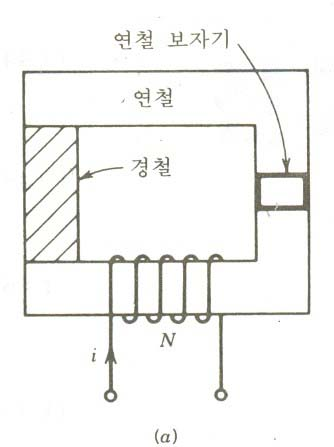
그림 1-3. 교재 그림 1.21(a) — 연철 틀 안의 경철(빗금, 자석이 될 부분)과 N회 코일
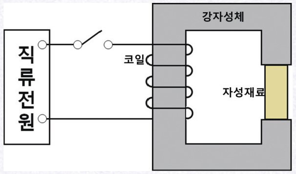
그림 1-4. 착자 방법 도식 (기고문 그림 3) — 직류전원·스위치·코일을 감은 강자성체, 틈에 자성재료. 캡션은 「실제 자석의 착자 방법」이지만 사진이 아니라 원리도입니다.
WS1과의 연결 Maxwell 실습에서는 이 착자 과정을 계산하지 않습니다. 이미 착자가 끝난 자석을 재질 값으로 넣습니다: 보자력 Hc(Magnitude)와 착자 방향(X·Y·Z Component)이 그것입니다(WS1 5쪽).
원리 2
원리 2. 착자 요크와 착자기 학습 질문 2·3
착자 요크의 역할과 자석 고정
착자 요크는 자석의 극 수와 극 위치를 결정하는 자기회로입니다. 기고문은 「자기회로를 구성하여 착자하는 자성체의 모양과 자화 방향을 자유롭게 할 수 있다」고 적고 있습니다. 자석을 요크에 장착한 뒤, 요크 명판에 표기된 착자 조건으로 착자합니다.
커패시터 뱅크는 수 초에 걸쳐 충전하고(사양 「충·방전시간 4 Sec 이내」), 스위치(SCR)가 도통하면 밀리초 이하의 짧은 시간에 요크 코일로 방전합니다. 실제 설비에서는 착자기 본체와 요크를 대전류용 케이블로 연결합니다.
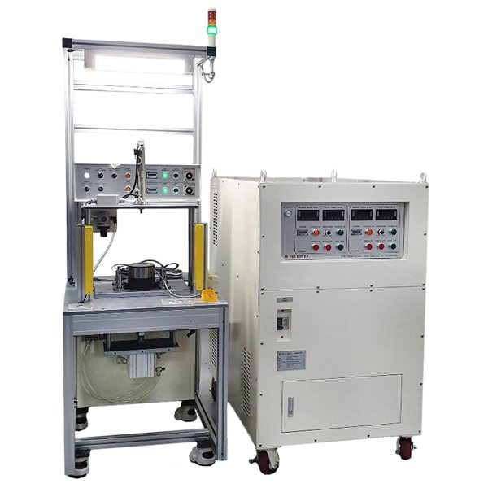
착자기와 요크 작업대 (엠엠에스테크)
착자 전류 실측값
SCR이 도통하면 전류가 급격히 상승하며, 이 착자기에서는 약 0.1 ms에 최대 7,521 A(실측)에 도달했습니다. 도입 질문의 답은 ③입니다.
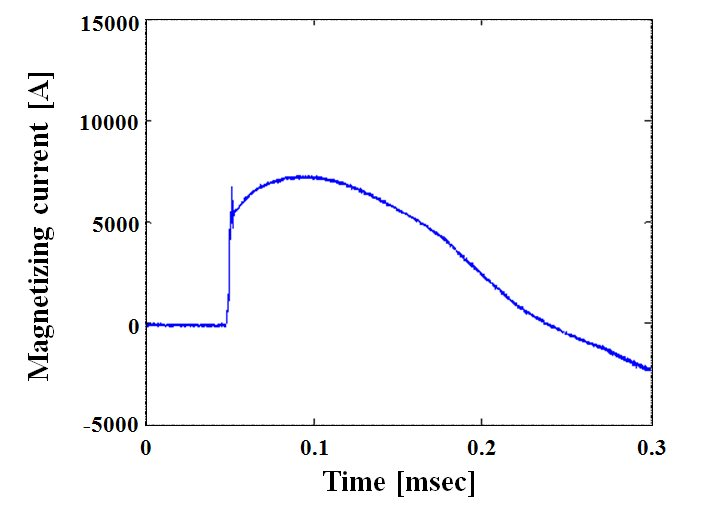
실측 착자 전류 (이창진 2013, Fig. 2.17)
착자 에너지와 순간 전력
논문의 착자 조건(1000 μF·800 V 또는 800 μF·1000 V)에서 저장 에너지는 ½CV² = 320~400 J입니다. 이 에너지가 약 0.1 ms 동안 방전될 때 평균 전력은
P ≈ W / t = (320~400 J) / (1 × 10−4 s) ≈ 3~4 × 106 W (수 MW)
계산값(평균). 논문에는 이 착자 조건이 두 가지로 적혀 있어 범위로 썼습니다. 순간 최대 전력은 원문에 없습니다.
이 때문에 착자 설비 주변에는 심장박동기 착용자 접근 금지 경고가 부착되어 있습니다.
요크 앞의 심장박동기 경고 스티커 (엠엠에스테크, 원본 사진이 작아 흐림)원리 3
원리 3. 착자 방향과 착자 품질 학습 질문 4
영구자석은 용도에 따라 여러 방향으로 착자할 수 있으며, 착자 방향에 따라 공극 자속밀도의 파형이 달라집니다. 「현재 시판되고 있는 전동기들은 주로 (c) Parallel 또는 (d) Radial 방향으로 착자된 영구자석을 많이 이용하고 있다」고 합니다.
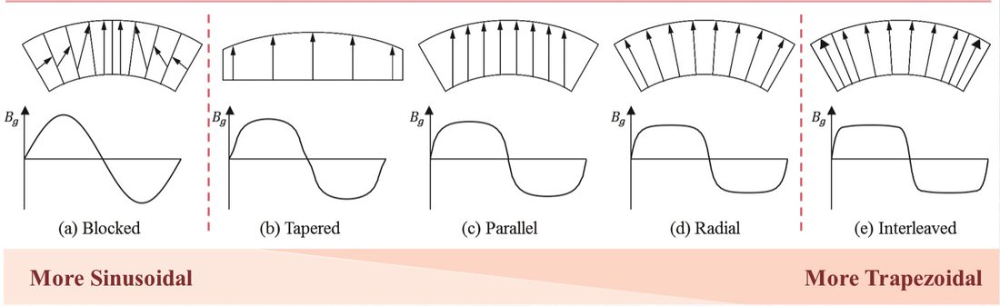
영구자석 자화 방향에 따른 공극 자속밀도 (기고문 그림 6) — 왼쪽일수록 정현파, 오른쪽일수록 사다리꼴
Parallel(평행) 착자: 자석 안 화살표가 모두 한 방향으로 나란합니다. 직각좌표계(Cartesian)의 한 방향으로 정합니다. WS1 막대자석이 이 경우입니다(+X 방향).
Radial(방사) 착자: 화살표가 중심에서 바깥(또는 안)으로 퍼집니다. 원통좌표계로 정합니다.
평행 착자에 분포권 고정자를 쓰면 정현파, 방사 착자에 집중권 고정자를 쓰면 구형파 역기전력이 나옵니다. 구형파 역기전력은 BLDC 전동기, 정현파는 PMSM의 특징이며, 이상적인 경우 둘 다 세 상의 토크를 합치면 일정한 토크가 됩니다.
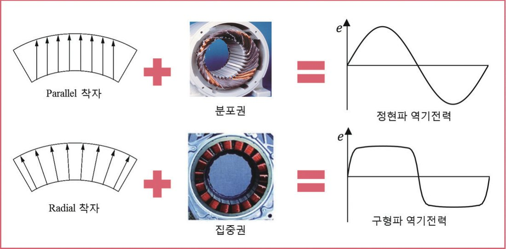
영구자석 자화 방향과 권선 배치에 따른 역기전력 파형 (기고문 그림 7)
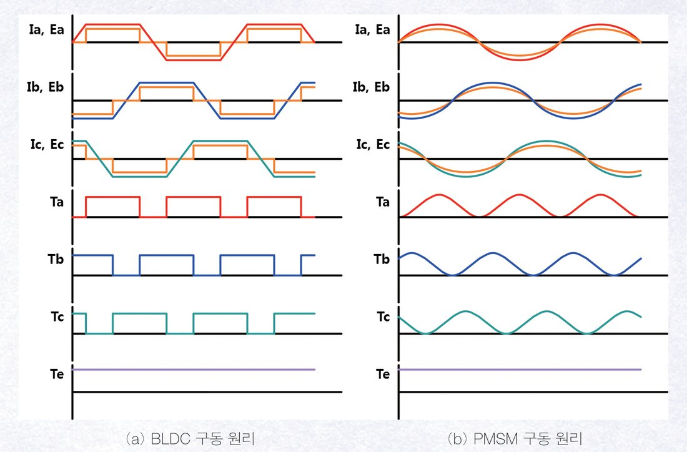
역기전력과 인가 전류 파형 — (a) BLDC, (b) PMSM (기고문 그림 8)
착자 불균일과 원인
착자를 마치면 자석 표면에 N극과 S극이 교대로 형성되지만, 극마다 세기에 차이가 생길 수 있습니다. 이창진(2013)이 측정한 착자 불균일은 4.38 %(실측, 해석 2.55 %)였고, 원인은 요크 내부 착자 코일의 위치 오차(CT 측정 최대 약 0.2 mm)였습니다. 이 차이는 코깅 토크를 증가시키므로 요크 설계와 제작 정밀도가 중요합니다.
에어컨용으로 개발한 가변자속 전동기는 쉽게 착자·감자되는 자석(보자력이 작음)과 그대로 있는 자석(보자력이 큼)을 함께 씁니다(병렬형 구조). 감자 상태에서는 역기전력 상수가 작아져 고속 운전이 가능하며, 시작품은 감자 상태에서 6000 rpm까지 측정했습니다(실측).
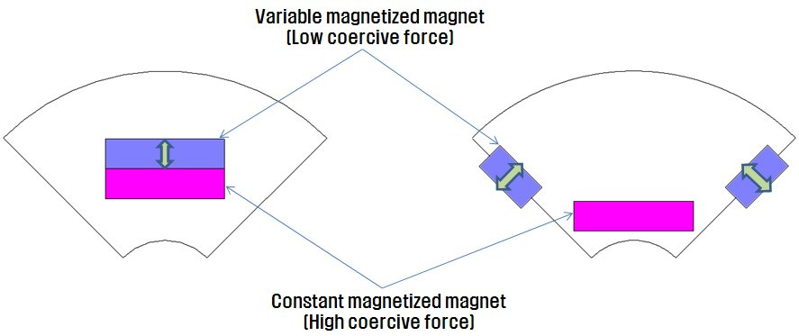
직렬형·병렬형 자석 배치 — Low/High coercive force (가변자속 발표)
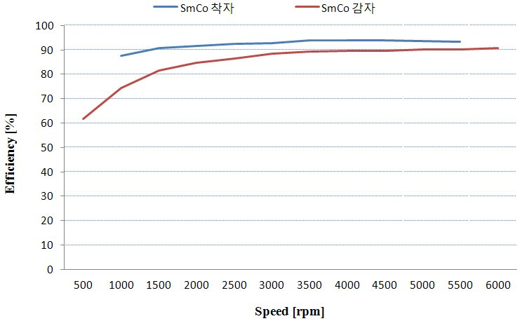
SmCo 착자·감자 상태의 효율, 실측 (가변자속 발표 슬라이드 24)
재료별 온도 특성
페라이트는 「저온 감자의 우려가 있다」, 희토류는 「고온 감자와 산화에 대한 우려가 있다」(기고문). 표에는 네오디뮴(NdFeB)이 100~130 ℃에 「고온감자」, 페라이트가 −40 ℃에 「저온감자」로 적혀 있습니다.
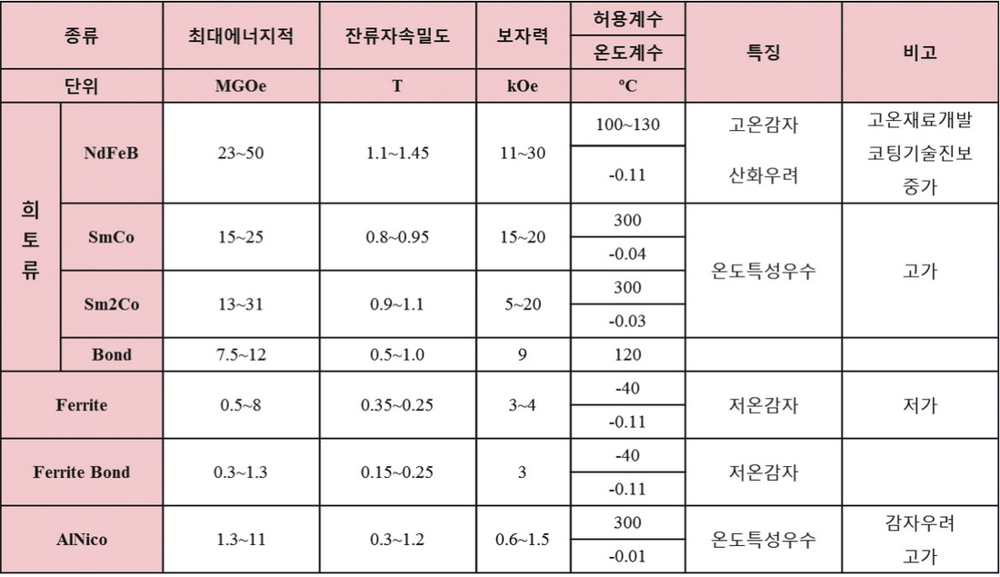
각종 영구자석의 특성 비교 (기고문 표 1). 페라이트 잔류자속밀도 「0.35~0.25」는 원문 순서 그대로입니다.
탈자
잔류 자기를 제거하는 장비(탈자기)도 있습니다. 제조사 측정값이 수백 G에서 수 G로 줄었습니다(1 G = 10−4 T).
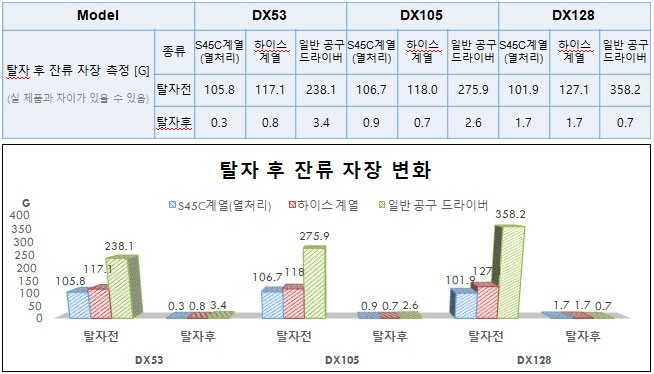
탈자 전후 잔류 자장 (엠엠에스테크 탈자기 자료)원리 5
원리 5. 착자 검증 및 측정 학습 질문 6
착자 결과는 가우스미터로 표면 자속밀도를 측정해 검증합니다. 프로브 끝의 홀 센서가 자계를 검출합니다. 자석을 회전시키며 원주 방향으로 측정하면 N·S극이 교대로 나타나는 파형을 얻으며, 이창진(2013)의 자석은 약 0.23 T였습니다(실측).
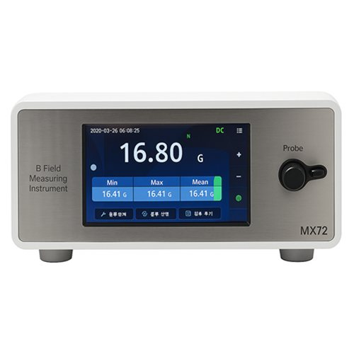
가우스미터 MX72 (엠엠에스테크)
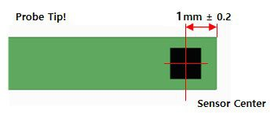
프로브 끝에서 센서까지 「1mm ± 0.2」 (엠엠에스테크)
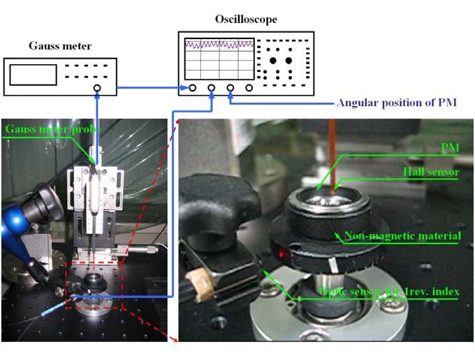
표면 자속밀도 측정 장치 (이창진 2013, Fig. 2.19)
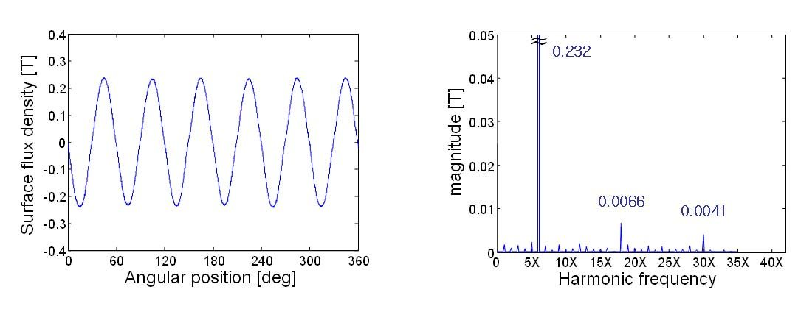
측정한 표면 자속밀도 (이창진 2013, Fig. 2.20)
표면 자속밀도 측정 — 마그넷 아날라이저 (44초, 엠엠에스테크 영상)
국제마그네트는 「표면 가우스로 측정한 수치는 단순 비교데이터로 사용함이 바람직하며」라고 적습니다. 자석 고유의 성능은 히스테리시스(B–H) 곡선으로 평가합니다.
전자장 해석의 역할 학습 질문 7
전자장 해석을 이용하면 제작 전에 자석 주변의 자계 분포를 검토할 수 있습니다. WS1에서는 착자된 막대자석 주변의 자계를 ANSYS Maxwell 2D로 계산합니다.
WS1 1~2쪽
WS1. 막대자석 착자
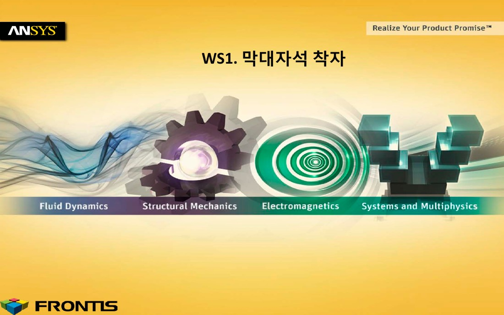
원본 1쪽 — 표지
⮚ NdFeB35 재질을 활용한 막대자석 만들기 ✔ Maxwell에는 다양한 재질 데이터가 기본적으로 제공되고 있습니다. 이 예제에서는 NdFe35 라는 영구자석 재질을 이용하여 막대 자석을 생성해 보도록 합니다.
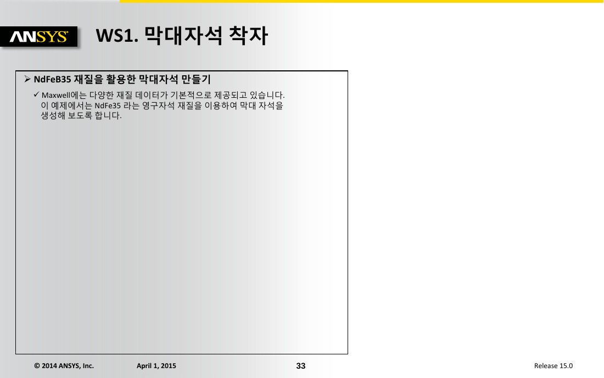
원본 2쪽 — 목표
참고 제목의 「NdFeB35」와 본문의 「NdFe35」는 같은 재질을 가리킵니다. Maxwell 재질 라이브러리의 이름은 NdFe35입니다.
WS1 3쪽
⮚ Magnetization 예제
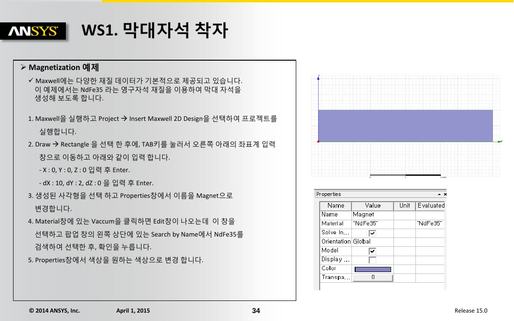
원본 3쪽
1. Maxwell을 실행하고 Project → Insert Maxwell 2D Design을 선택하여 프로젝트를 실행합니다.
2. Draw → Rectangle 을 선택 한 후에, TAB키를 눌러서 오른쪽 아래의 좌표계 입력 창으로 이동하고 아래와 같이 입력 합니다. — X : 0, Y : 0, Z : 0 입력 후 Enter. — dX : 10, dY : 2, dZ : 0 을 입력 후 Enter.
3. 생성된 사각형을 선택 하고 Properties창에서 이름을 Magnet으로 변경합니다.
4. Material창에 있는 Vacuum을 클릭하면 Edit창이 나오는데 이 창을 선택하고 팝업 창의 왼쪽 상단에 있는 Search by Name에서 NdFe35를 검색하여 선택한 후, 확인을 누릅니다.
5. Properties창에서 색상을 원하는 색상으로 변경 합니다.
항목
입력값
시작점 X, Y, Z
0, 0, 0 mm
크기 dX, dY, dZ
10, 2, 0 mm
이름 · 재질
Magnet · NdFe35
Maxwell(AEDT)을 실행하면 새 프로젝트가 열려 있습니다. 없으면 File → New.
Project → Insert Maxwell 2D Design.
Maxwell 2D → Solution Type...에서 Magnetostatic이 골라져 있는지 보고(아니면 고르고) OK. 트리에 Maxwell2DDesign1 (Magnetostatic, XY).
Draw → Rectangle → 오른쪽 아래 좌표 칸 X 0, Y 0, Z 0 → Enter.
칸 이름이 dX·dY·dZ(Relative)로 바뀌면 10, 2, 0 → Enter. Fit All로 화면에 맞춥니다.
Properties의 Name 칸을 더블 클릭해 Magnet.
Material 칸(「vacuum」)을 클릭 → 목록에서 Edit... → Select Definition 창의 Search by Name에 NdFe35 → 선택되면 확인.
Color 칸에서 원하는 색 → OK (해석에는 영향 없음).
현재 버전(2020 R2) Insert Maxwell 2D Design으로 만든 디자인이 이 PC에서는 Transient로 만들어졌습니다(왜 그런지는 확인하지 못했습니다). 그래서 3번처럼 Solution Type을 꼭 확인합니다. 새 프로젝트에 Maxwell3DDesign1이 자동으로 함께 생기는데 그대로 두어도 됩니다. Material 칸은 클릭하면 창이 아니라 목록이 펼쳐지고, 그 안의 Edit...로 재질 창을 엽니다. 좌표 칸은 마우스가 그림 위를 지나면 그 위치 값으로 채워지므로 칸의 글자를 지우고 새로 입력하세요(그대로 두면 시작점이 0.4 mm처럼 어긋납니다). Draw → Rectangle을 고르면 왼쪽 위에 Measure Data 창이 열릴 수 있는데, 그리기에는 영향이 없으니 두거나 Close로 닫습니다. 원본의 「Vaccum」은 「vacuum」의 오기입니다.
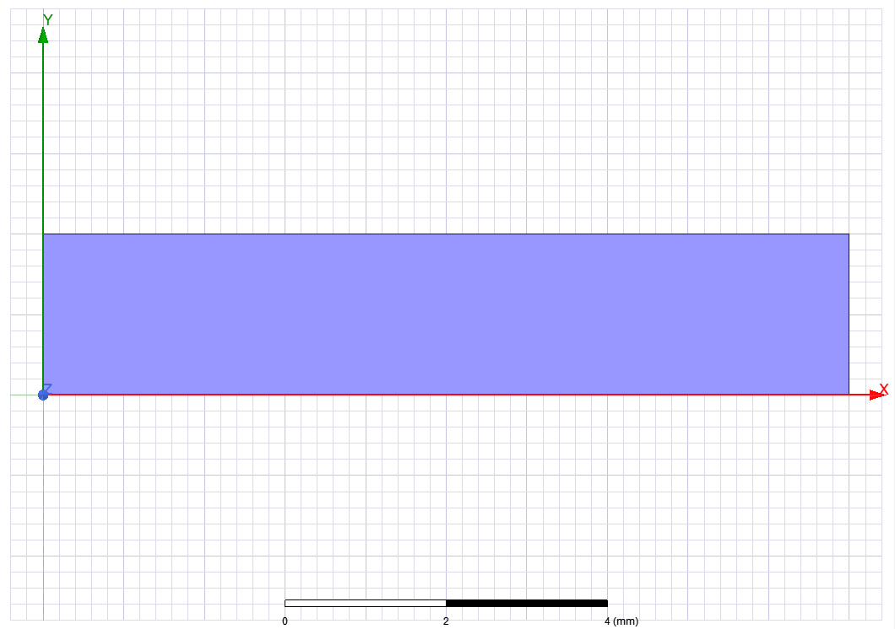
2020 R2 결과 — 10 × 2 mm 막대자석(NdFe35). 왼쪽 아래 모서리가 원점입니다.
원점 중심 배치 원본대로 (0, 0)에서 시작하면 자석의 왼쪽 아래 모서리가 원점에 놓여 결과 그림이 좌표축에 대해 한쪽으로 치우쳐 보입니다. 시작점을 X −5, Y −1로 넣으면 자석 가운데가 원점에 옵니다. 결과 값은 같습니다 — 부록 B.
영상으로 따라하기 — 1~8번WS1 4쪽
⮚ 재질의 특성을 변경하여 Parallel 착자를 진행합니다.
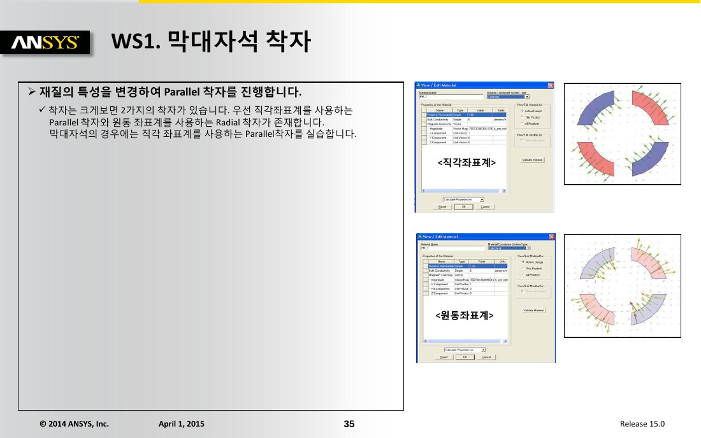
원본 4쪽
✔ 착자는 크게보면 2가지의 착자가 있습니다. 우선 직각좌표계를 사용하는 Parallel 착자와 원통 좌표계를 사용하는 Radial 착자가 존재합니다. 막대자석의 경우에는 직각 좌표계를 사용하는 Parallel착자를 실습합니다.
참고 이 쪽의 오른쪽 그림은 막대자석이 아니라 고리를 4조각 낸 다른 예제(재질 이름 PM_1)의 화면입니다. 위 그림은 화살표가 한 방향으로 나란한 Parallel, 아래 그림은 중심에서 퍼지는 Radial입니다. 재질 창의 숫자는 NdFe35 값이 아닙니다(NdFe35 값은 5쪽). 원리는 앞의 「원리 2」를 보세요.
WS1 5쪽
⮚ 재질의 특성을 변경하여 Parallel 착자를 진행합니다.
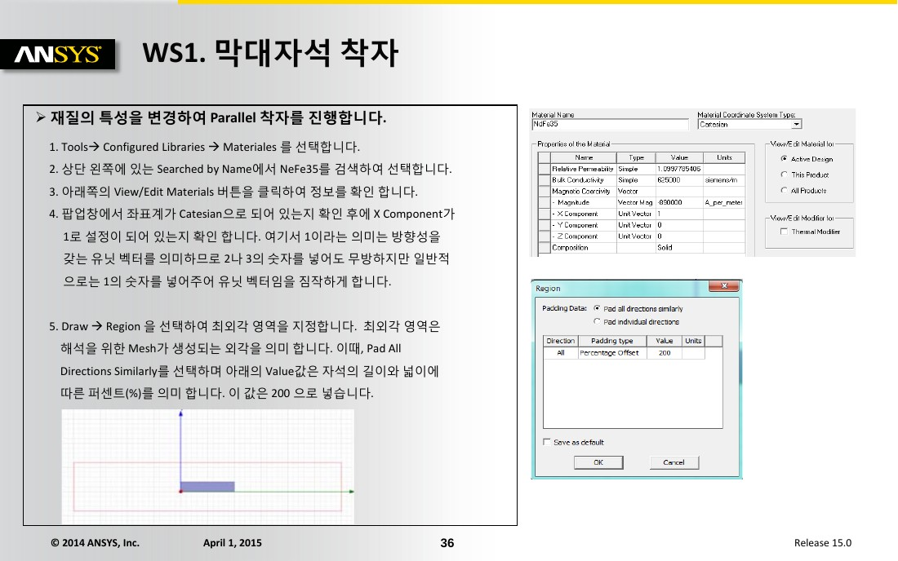
원본 5쪽
1. Tools → Configured Libraries → Materials 를 선택합니다.
2. 상단 왼쪽에 있는 Search by Name에서 NdFe35를 검색하여 선택합니다.
3. 아래쪽의 View/Edit Materials 버튼을 클릭하여 정보를 확인 합니다.
4. 팝업창에서 좌표계가 Cartesian으로 되어 있는지 확인 후에 X Component가 1로 설정이 되어 있는지 확인 합니다. 여기서 1이라는 의미는 방향성을 갖는 유닛 벡터를 의미하므로 2나 3의 숫자를 넣어도 무방하지만 일반적 으로는 1의 숫자를 넣어주어 유닛 벡터임을 짐작하게 합니다.
5. Draw → Region 을 선택하여 최외각 영역을 지정합니다. 최외각 영역은 해석을 위한 Mesh가 생성되는 외각을 의미 합니다. 이때, Pad All Directions Similarly를 선택하며 아래의 Value값은 자석의 길이와 넓이에 따른 퍼센트(%)를 의미 합니다. 이 값은 200 으로 넣습니다.
NdFe35 재질 값 (2020 R2 화면)
값
Material Coordinate System Type
Cartesian
Relative Permeability (비투자율)
1.0997785406
Bulk Conductivity
625000 S/m
Magnetic Coercivity — Magnitude
−890000 A/m
X · Y · Z Component
1 · 0 · 0
Tools → Edit Libraries → Materials...
Search by Name에 NdFe35. 첫 줄 NdFe35(Location: Project)가 선택됩니다.
View/Edit Materials...
Cartesian, Magnitude −890000 A/m, X Component 1(Y 0, Z 0)을 확인합니다. → +X 방향 Parallel 착자. 바꾸지 않으므로 Cancel → 취소.
Draw → Region → Pad all directions similarly(기본 선택), Padding type Percentage Offset, Value 200 → OK.
현재 버전(2020 R2) 「Configured Libraries」 메뉴는 Tools → Edit Libraries → Materials...입니다. 자석에 재질을 넣은 뒤라 목록 첫 줄에 이 프로젝트의 사본(Location: Project)이 있습니다. 재질을 고칠 때는 이 사본을 고치므로 라이브러리 원본은 바뀌지 않습니다(추가 실습 A). 원본의 「Materiales」「NeFe35」「Catesian」은 각각 Materials, NdFe35, Cartesian의 오기입니다. Region 200 %는 자석 크기의 200 %만큼 사방으로 넓힌다는 뜻이라, 영역이 x −20~30 mm, y −4~6 mm가 됩니다.
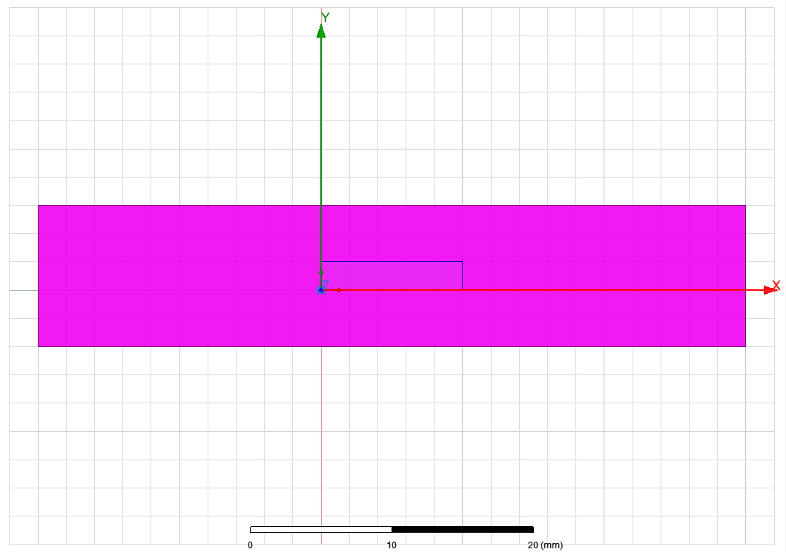
2020 R2 결과 — 자석 둘레의 해석 영역(Region 200 %, 분홍 테두리가 선택된 Region)영상으로 따라하기 — 1~5번WS1 6쪽
⮚ 경계 조건 입력
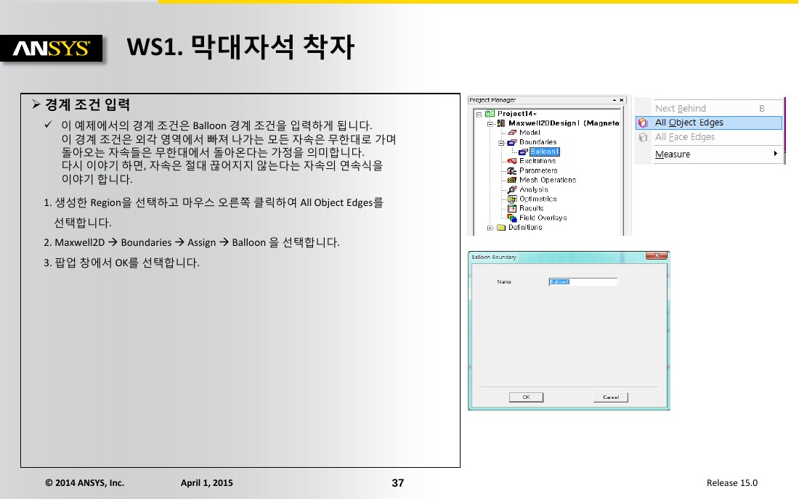
원본 6쪽
✔ 이 예제에서의 경계 조건은 Balloon 경계 조건을 입력하게 됩니다. 이 경계 조건은 외각 영역에서 빠져 나가는 모든 자속은 무한대로 가며 돌아오는 자속들은 무한대에서 돌아온다는 가정을 의미합니다. 다시 이야기 하면, 자속은 절대 끊어지지 않는다는 자속의 연속식을 이야기 합니다.
1. 생성한 Region을 선택하고 마우스 오른쪽 클릭하여 All Object Edges를 선택합니다. 2. Maxwell2D → Boundaries → Assign → Balloon 을 선택합니다. 3. 팝업 창에서 OK를 선택합니다.
자석 바깥의 Region을 클릭 → 오른쪽 클릭 → Extend Selection → All Object Edges. 왼쪽 아래 상태 표시줄에 4 edges are selected.
Maxwell 2D → Boundaries → Assign → Balloon...
이름 Balloon1 그대로 OK. 트리 Boundaries 아래에 Balloon1.
현재 버전(2020 R2) 오른쪽 클릭 메뉴에 All Object Edges가 바로 있지 않고 Extend Selection 안에 있습니다.
영상으로 따라하기 — 1~3번WS1 7쪽
⮚ 해석 조건 입력
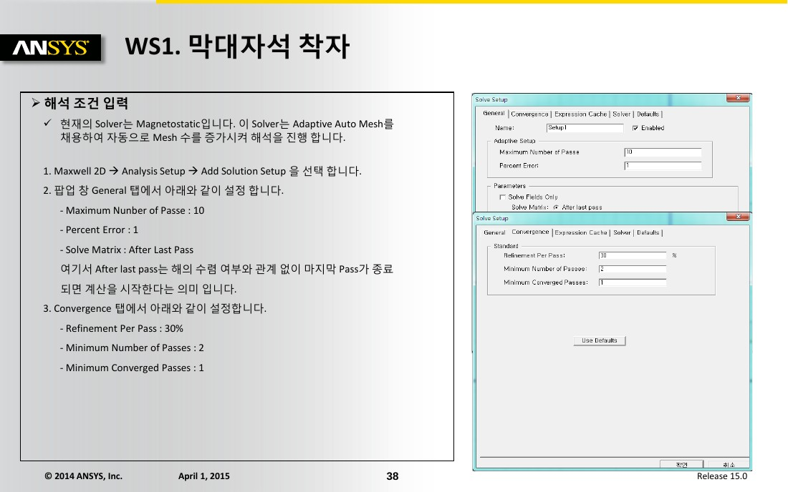
원본 7쪽
✔ 현재의 Solver는 Magnetostatic입니다. 이 Solver는 Adaptive Auto Mesh를 채용하여 자동으로 Mesh 수를 증가시켜 해석을 진행 합니다.
1. Maxwell 2D → Analysis Setup → Add Solution Setup 을 선택 합니다.
2. 팝업 창 General 탭에서 아래와 같이 설정 합니다. — Maximum Number of Passes : 10 — Percent Error : 1 — Solve Matrix : After Last Pass
3. Convergence 탭에서 아래와 같이 설정합니다. — Refinement Per Pass : 30% — Minimum Number of Passes : 2 — Minimum Converged Passes : 1
현재 버전(2020 R2) 위 값은 모두 2020 R2의 기본값과 같습니다. 영상에서는 값을 확인하며 다시 넣었습니다. 원본의 「Maximum Nunber of Passe」는 Maximum Number of Passes의 오기입니다.
설명 Magnetostatic 해석은 적응 메시(Adaptive Mesh) 방식으로, pass마다 오차가 큰 요소를 세분하며 반복 계산합니다. 연속한 pass 사이의 에너지 오차가 Percent Error(1 %)보다 작아지면 종료하고, 최대 10 pass에서 종료합니다. pass마다 요소 수를 30 %씩 늘립니다.
영상으로 따라하기 — 1~3번WS1 8쪽
⮚ 해석 진행 및 결과 확인
원본 8쪽
1. 파일을 원하는 경로에 저장을 합니다. 2. Maxwell 2D → Validation Check → Analyze All 을 선택합니다. 3. 해석이 다 끝나고 나면 Ctrl + A를 눌러서 전체 선택을 합니다. 4. Maxwell 2D → Fields → Fields → A → Flux_Lines 선택 후 팝업 창에서 OK 5. Flux_Lines 의 값을 확인 현재의 단위는 Wb/m입니다. 6. 다시 한 번 Ctrl + A를 눌러서 전체 선택을 합니다. 7. Maxwell 2D → Fields → Fields →B → Mag_B 선택 후 팝업 창에서 OK 이 밖에도 다양한 값을 자율적으로 선택하여 확인 할 수 있습니다.
File → Save As... → 파일 이름을 영문으로 넣고(예: WS1_BarMagnet_StudentID) → 저장.
Maxwell 2D → Validation Check... → 7개 항목 모두 초록 체크 → Close → Maxwell 2D → Analyze All. Message Manager에 「Normal completion of simulation」, 창 제목에 SOLVED.
Edit → Select All (Ctrl + A).
Maxwell 2D → Fields → Fields → A → Flux_Lines → In Volume AllObjects → Done.
현재 버전(2020 R2) 프로젝트 파일 이름과 저장 경로는 영문으로 합니다. 한글이 들어가면 Tools → Run Script의 인자 등에서 오류가 날 수 있습니다. Create Field Plot 창의 단추는 OK가 아니라 Done입니다. 6번의 전체 선택을 빼먹으면 「A geometry must be selected to generate a plot.」 오류가 납니다. 이 모델은 이 PC에서 약 15초에 풀렸습니다.
2020 R2 결과 — Flux_Lines (범례 약 ±0.0011 Wb/m)2020 R2 결과 — Mag_B (범례 최대 1.0633 T)
영상으로 따라하기 — 1~7번WS1 9쪽
⮚ 돌발 퀴즈
원본 9쪽
✔ Region 영역의 –Y / Y 값을 800으로 변경하고 해석을 진행해 봅시다.
예측 — 해석 영역을 ±Y 방향으로 넓히면 자속선과 Mag_B 분포는 어떻게 달라집니까?
모델 트리 Region 아래 CreateRegion을 더블 클릭.
속성 창에서 +Y Padding Data 800, −Y Padding Data 800.
확인. Message Manager의 「Solutions have been invalidated」는 형상이 바뀌어 이전 해가 지워졌다는 정상 안내입니다.
Maxwell 2D → Analyze All. 그려 둔 Flux_Lines·Mag_B가 새 결과로 바뀝니다.
2020 R2 결과 — Region ±Y 800 % (y −16 ~ 18 mm). 자속선이 위아래로 크게 돌아 닫힙니다. Mag_B 최대 1.0660 T.영상으로 따라하기 — 1~4번결과
결과 분석
항목
Region 200 %
±Y 800 %
읽은 곳
Region 범위
x −20~30, y −4~6 mm
x −20~30, y −16~18 mm
형상
Mag_B 최대
1.0633 T
1.0660 T
플롯 범례 맨 위
Flux_Lines 범위
약 ±0.0011 Wb/m
—
플롯 범례
자속선 모양
위·아래 경계에 눌려 납작함
자석 둘레를 크게 돌아 닫힘
그림
해석값(2026-11-08, AEDT 2020 R2, 이 교재의 실행). 원본 8쪽 그림의 범례 숫자는 흐려서 정확히 읽히지 않아 표에 넣지 않았습니다.
1. 착자 방향과 자극 위치
X Component = 1(+X 방향)로 착자한 자석 안에서 자속은 +X 방향으로 흐르고, 오른쪽 끝(N극)에서 나와 바깥을 돌아 왼쪽 끝(S극)으로 들어갑니다. 자속선은 끊어지지 않는 닫힌 고리입니다. 6쪽의 Balloon 경계는 이 고리가 해석 영역 바깥까지 이어진다고 가정하는 조건입니다.
2. 해석 영역 크기의 영향
영역을 넓혀도 자석 안의 |B|는 거의 같습니다(1.0633 → 1.0660 T). 그러나 영역이 좁으면 바깥 자속이 경계에 눌려 모양이 달라집니다. 해석 영역은 결과가 영역 크기에 따라 변하지 않을 때까지 넓혀 확인해야 합니다.
입니다(단위: H/m × A/m = Wb/m² = T). 교재 8.1절 재질 화면(부록 A)도 같은 재질 값에서 Br 1.23 T를 자동으로 계산해 보여 줍니다. 그런데 해석한 자석 안의 |B|는 약 1.06 T로 이보다 작습니다. 이 막대자석은 둘레가 모두 공기라 자석이 스스로 만든 자계가 자석 안에서 착자 방향과 반대(H < 0)로 걸리고, 그만큼 동작점이 Br에서 감자 곡선(2사분면)을 따라 내려가기 때문입니다. 교재 1.5.2절은 이를 식으로 보여 줍니다: 자석 바깥에 공극이 생기면 암페어 주회 법칙에서 Hm = −(lg/lm) Hg (식 1.53)로 자석 안 자계가 음수가 되고, 동작점은 감자 곡선과 전단선(식 1.56)의 교점에서 정해집니다. 연철 보자기를 다시 끼우면(철 경로로 감싸면) 동작점이 Br 쪽으로 올라갑니다. 막대자석은 둘레 전체가 공기라 공극이 아주 큰 경우에 해당합니다.
값의 종류 1.23 T는 재질 값으로 계산한 값, 1.06 T는 해석값입니다. 둘 다 실제 자석을 잰 값이 아닙니다.
추가 실습 A
추가 실습 A. 착자 방향 반전 (X Component −1)
예측 — X Component를 1에서 −1로 바꾸면 자극 위치, 자속선 방향, |B|의 크기는 어떻게 됩니까? 9쪽까지 한 프로젝트(±Y 800)에서 이어서 합니다.
Edit → Select All → Maxwell 2D → Fields → Fields → B → B_Vector → AllObjects → Done. 자석 오른쪽 끝의 큰 화살표가 +X(오른쪽)를 향합니다.
X Component를 −1로 → OK → 확인 창 → 예(Y) → Edit Libraries 확인.
Maxwell 2D → Analyze All. 화살표가 −X(왼쪽)로 뒤집힙니다.
현재 버전(2020 R2) 3번에서 OK를 누르면 「This editing operation will cause the undo/redo history to be cleared … permanent invalidation of the solutions … Do you want to continue?」 창이 뜹니다. 되돌리기 기록과 기존 해가 지워진다는 뜻이니 예를 누르고 다시 풉니다. 바꾸는 것은 프로젝트 사본이라 라이브러리의 NdFe35는 그대로입니다.
X Component = 1 — B 화살표가 +X, 오른쪽 끝이 N극 (이 화면에서는 Mag_B 색이 꺼진 채 화살표만 보였습니다)X Component = −1 — B 화살표가 −X, 왼쪽 끝이 N극
항목
X Component 1
X Component −1
자석 안 B 방향
+X
−X
N극
오른쪽 끝
왼쪽 끝
Mag_B 최대 (범례)
1.0660 T
1.0660 T
정리 — 착자 방향을 반전하면 자속 방향(N·S극 위치)만 반전되고 크기 분포는 같습니다. 실제 착자에서는 요크 코일에 흘리는 전류의 방향과 배치가 이 「방향」을 정합니다(원리 3).
영상으로 따라하기 — 1~4번정리
학습 질문 정리
질문
답
본문
1. 착자 시점과 방법
모양을 다 만든 뒤(때로는 모터에 조립한 뒤) 큰 기자력을 걸었다가 없애면 잔류 자속밀도 Br이 남아 자석이 됩니다.
WS1은 라이브러리에 있는 NdFe35를 그대로 썼습니다. 교재 8.1절(3상 16극 24슬롯 매입영구자석형 동기발전기)은 자석 재질을 직접 만들고 자석마다 착자 방향을 정합니다.
자석 재질 만들기
「Magnet 재질의 Mu, Hc, Br값 중 2개의 값을 입력하며 나머지 하나의 값은 자동으로 계산된다. 보통 Mu와 Br값을 입력하나 여기서는 Mu와 Hc값을 적용한다.」(교재 8.1.16)
교재 8.1.16의 재질 입력 화면 — Permanent Magnet, Mu 1.09978, Hc −890000 A_per_meter를 넣으면 Br 1.23000163360913 tesla, Mp 978804.2 A_per_meter가 자동 계산됩니다.
이 값은 WS1의 NdFe35(μr 1.0997785406, Hc −890000 A/m)와 같습니다. 결과 정리 3의 계산 Br ≈ 1.23 T와도 맞습니다.
자석마다 착자 방향 정하기
「Magnet 영역 선택 → 메뉴에서 Modeler → Coordinate System → Create → Relative CS → Rotated → (자석이 여러개인 경우 자석마다 각각 설정해 줘야 하며 N극과 S극의 좌표계의 x축 기준 방향이 달라야 한다.)」 「①, ② : 좌표계 설정, Absolute, Cylindrical → ③ : Magnet 중심 클릭(방향을 반대로 하고 싶을 때 Rphi 의 값에 + 180) → ④ : Magnet 선택 → ⑤ : Orientation : Relative CS1」(교재 8.1.16)
교재 8.1.16 착자 방향 설정 화면 — 원점에서 자석 중심 ③을 지나는 상대 좌표계를 만들고, 자석 ④의 Orientation ⑤를 RelativeCS1로 둡니다.
WS1과 비교 WS1은 전체 좌표계(Global)의 X축이 곧 착자 방향이었습니다(X Component 1). 전동기에서는 자석이 원 둘레를 따라 돌아가며 놓이므로, 자석마다 자기 좌표계(Relative CS)를 붙이고 재질의 X Component 방향이 그 좌표계의 x축을 따르게 합니다. N극 자석과 S극 자석은 x축을 서로 반대로(180°) 둡니다 — 추가 실습 A에서 X Component를 −1로 바꾼 것과 같은 효과입니다.
그림을 읽을 때 주의 위 화면의 재질 이름은 「Ferrite_0.42」이지만 값(Mu 1.09978, Hc −890000)과 교재의 재질 목록(그림 8.11의 NdFe35_2DSF1.000_X)으로 보아 NdFe35 값입니다. 착자 방향 화면의 상태 표시줄은 본문 지시(Cylindrical)와 달리 Cartesian으로 보입니다. 원본 그림 그대로 실었습니다.
부록 B
부록 B. 원점 중심 배치 모델
원본 WS1은 사각형을 (0, 0)에서 시작해 자석의 왼쪽 아래 모서리가 원점에 놓입니다. 해석 영역(Region)은 원점이 아니라 자석을 기준으로 넓히므로 결과는 자석 가운데 (5, 1) mm를 기준으로 대칭이지만, 좌표축에 대해서는 한쪽으로 치우쳐 보여 N극·S극의 위치를 읽기가 불편합니다.
3쪽 ④번에서 시작점만 X −5, Y −1, Z 0으로 넣고(크기 dX 10, dY 2는 그대로) 나머지를 똑같이 하면, 자석 가운데가 원점에 오고 그림이 x축·y축에 대해 대칭이 됩니다.
항목
원본 (0, 0) 시작
원점 가운데 (−5, −1) 시작
자석 범위
x 0~10, y 0~2 mm
x −5~5, y −1~1 mm
Region 200 %
x −20~30, y −4~6 mm
x −25~25, y −5~5 mm
Region ±Y 800 %
y −16~18 mm
y −17~17 mm
Mag_B 최대 (200 % · ±Y 800 %)
1.0633 · 1.0660 T
1.0633 · 1.0660 T
Flux_Lines 범위
약 ±0.0011 Wb/m
약 ±0.0011 Wb/m
두 경우 모두 2026-11-08 같은 PC·같은 순서로 따로 풀어 범례에서 읽은 해석값입니다. 자석을 옮겨도 자석과 영역의 상대 위치가 같으므로 결과도 같습니다.
원본 (0, 0) 시작 — Mag_B, Region 200 %원점 가운데 — Mag_B, Region 200 %원본 (0, 0) 시작 — ±Y 800 %원점 가운데 — ±Y 800 %
원점 가운데 — 추가 실습 A(X Component −1): 화살표가 −X, 왼쪽 끝이 N극. 원점을 사이에 두고 좌우 대칭입니다.영상으로 따라하기 — 3쪽을 원점 가운데로 (나머지 쪽은 본문 영상과 같은 순서)부록 C
부록 C. 막대자석의 평행·방사 착자 비교
WS1에서는 막대자석을 길이 방향(X)으로 착자했습니다. 이 부록에서는 같은 10 mm × 2 mm 막대자석을 원점 중심에 x축과 나란히 놓고, 아랫면에서 윗면 쪽(+Y)으로 착자하되 자화 방향을 두 가지로 주어 비교합니다. 평행(Parallel) 착자는 자석 전체의 자화가 한 방향으로 나란한 것이고, 방사(Radial) 착자는 자화가 한 점(착자 중심)에서 반지름 방향으로 퍼지는 것입니다(원리 3). 자석 면이 평평하므로 착자 방향의 차이가 자속밀도 분포에 그대로 드러납니다.
Magnetostatic, Max Passes 12, Percent Error 0.5 %, 자석 최대 요소 길이 0.2 mm
해석 시간 평행 18.1 s, 방사 12.8 s
그림 C-1. 해석에 넣은 자화 방향 — 왼쪽 평행 착자(모든 위치에서 +Y), 오른쪽 방사 착자(착자 중심 (0, −5) mm에서 퍼지는 방향). 방사 착자의 화살표는 자석 양 끝에서 수직선과 45° 기울어집니다. 화살표는 위 표의 설정값으로 그린 것입니다.
Maxwell에서 설정하는 방법 평행 착자는 WS1의 NdFe35를 복사한 재질에서 X Component를 0, Y Component를 1로 바꾸면 됩니다(추가 실습 A와 같은 창). 방사 착자는 먼저 Modeler → Coordinate System → Create → Relative CS → Offset으로 (0, −5, 0)에 좌표계를 만들고, 재질 창에서 Material Coordinate System Type을 Cylindrical로 바꿔 R Component를 1로 둡니다. 마지막으로 자석의 속성(Attribute) 창에서 Orientation을 새 좌표계로 바꿉니다. Cylindrical 재질의 R 방향은 Orientation 좌표계의 원점을 기준으로 정해지므로, 이 단계를 빠뜨리면 원점 (0, 0)이 착자 중심이 되어 자석 윗부분과 아랫부분의 착자 방향이 서로 반대가 됩니다.
이 부록의 모델은 스크립트 skills/maxwell-desktop-agent/scripts/bar_magnet_par_rad.py로 만들고 풀었습니다(화면 조작 영상 없음). 프로젝트 파일은 WS1_appendix_bar_par_rad.aedt입니다.
C.2 결과 — Maxwell 자속밀도 화면
평행 착자 — Mag_B (범례 최대 1.0169 T)방사 착자 — Mag_B (범례 최대 1.3545 T)
Maxwell 화면은 해석 영역 전체를 보여 주므로 자석 주변이 작게 보입니다. 같은 색 범위로 자석 주변만 비교하려고, Fields Calculator에서 자속밀도 벡터 B를 0.1 mm 간격 격자(x −10~10 mm, y −7~7 mm)로 내보낸 뒤(Export → On Grid) 그 값으로 그림 C-2를 그렸습니다.
그림 C-2. 자속밀도 크기 |B|(색, 두 그림 모두 0~0.6 T)와 자속의 흐름(흰 선) — 왼쪽 평행 착자, 오른쪽 방사 착자. 검은 사각형이 자석입니다.
C.3 결과 — 자석 윗면·아랫면의 자속밀도
자석 윗면에서 0.5 mm 위(y = +1.5 mm)와 아랫면에서 0.5 mm 아래(y = −1.5 mm)에 x −10~10 mm 선을 두고, 수직 성분 By를 그렸습니다. 회색 띠가 자석이 있는 구간입니다.
그림 C-3. 자석 위·아래 0.5 mm 선에서의 By — 평행 착자(빨강) · 방사 착자(파랑)
항목
평행 착자
방사 착자
읽은 곳
윗면 위 중앙 By (0, +1.5 mm)
0.130 T
0.009 T
선 리포트 CSV
윗면 위 By 최대 · 위치
0.173 T · x = ±3.85 mm
0.199 T · x = ±4.6 mm
〃
아랫면 아래 중앙 By (0, −1.5 mm)
0.130 T
0.296 T
〃
자석 안 |B| 평균
0.234 T
0.377 T
격자 값 [계산]
자석 끝 가까이 (4.5, 0) mm의 B 방향
+Y (x축에서 90°)
x축에서 39° (자화 방향은 48°)
격자 값 [계산]
자석 안 |B| 최대 (Fields Calculator)
1.125 T
1.366 T
자석 모서리
모두 해석값(2026-11-08, AEDT 2020 R2)과 그 계산값입니다. 실측이 아닙니다.
C.4 결과 분석
평행 착자는 위아래가 대칭입니다. 윗면 위와 아랫면 아래의 By 분포가 같고(중앙 0.130 T), 자속은 윗면에서 나와 자석 양 끝을 돌아 아랫면으로 들어갑니다. 두께 방향(2 mm)으로 착자한 얇은 자석이라 반자계가 커서, 자석 안의 자속밀도는 모서리를 빼면 Br(약 1.23 T)보다 훨씬 작은 0.14~0.45 T입니다. 같은 자석을 길이 방향으로 착자한 WS1 본문(Mag_B 최대 약 1.06 T)과 비교하면 착자 방향에 따른 동작점 차이를 확인할 수 있습니다(원리 4).
방사 착자는 윗면 중앙의 자속밀도가 거의 사라집니다. 윗면 위 중앙 By는 0.009 T로 평행 착자의 7 % 수준이고, 자속은 자석 양 끝으로 몰립니다(최대 0.199 T, x = ±4.6 mm). 반대로 아랫면 아래 중앙은 0.296 T로 평행 착자의 2.3배입니다.
원인은 자화의 발산입니다. 자화 M이 한 점에서 퍼져 나가면 자석 안에 −∇·M 만큼의 자하(磁荷)가 생깁니다. 착자 중심이 자석 아래에 있으므로 자화는 위로 갈수록 퍼지고(∇·M > 0), 자석 안에 S극 성질의 자하가 분포합니다. 이 자하가 윗면의 N극 표면 자하를 상쇄하고 아랫면의 S극 표면 자하에 더해지므로, 윗면 쪽 자속은 약해지고 아랫면 쪽 자속은 강해집니다.
전동기 자석과의 관계. 전동기의 아크형 자석은 면 자체가 원호여서, 회전 중심을 착자 중심으로 하는 방사 착자를 하면 자화가 어디서나 자석 면과 수직이 됩니다. 평평한 막대자석에 방사 착자를 하면 자화가 면에 비스듬해지고 발산 효과가 커져, 착자 중심 반대쪽 면의 자속이 오히려 줄어듭니다. 착자 방향은 자석 모양과 함께 설계해야 한다는 점을 보여 줍니다.
추가 과제 스크립트 인자의 세 번째 값(착자 중심 y, 기본 −5 mm)을 +5 mm로 바꾸면 자화가 윗면 쪽으로 모이는 착자(수렴)가 됩니다. 이때 윗면 위 중앙의 By가 평행 착자보다 커지는지, 착자 중심 거리를 −5 → −20 mm로 늘리면 결과가 평행 착자에 가까워지는지 확인해 보세요.